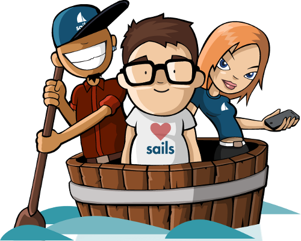

Sails.js
Chi sono
 Github:
Github: Web developer presso iDoctors.it
Sempre in cerca di novità su ciò che riguarda lo sviluppo web
Cos'è Sails.js?
Sails è un framework MVC per Node.js
L'architettura prende spunto dai migliori framework MVC (Rails, Zend, Symfony, ecc...), con in più l'integrazione del nuovo approccio delle web app (API, single page apps, realtime, ecc..)
I punti di forza
- Reatime: molte funzioni disponibili grazie a socket.io
- Performance: con anche il supporto nativo di redis
- Node.js: si usa lo stesso linguaggio per backend che frontend
- Grunt: nativo
- Estremamente modulare...
-
Model
Vari adapter nativi tra cui MongoDB, MySQL, PostgreSQL
-
Views
Template engine supportati: ejs, jade
-
Controller
Moduli di Express.js come ad esempio Passport
Si ok dov'è il codice?
La semplicità prima di tutto
Installazione
sudo npm -g install sailsCreazione di un nuovo progetto
sails new testProject --linkerAvviamo il server
cd testProject
sails liftA questo punto visitiamo la pagina http://localhost:1337 e vediamo il risultato
Configuriamo il DB
In questo esempio utilizzeremo MySQL quindi installiamo l'adapter
sudo npm install sails-mysqlapriamo il file config/adapters.js ed impostiamo i parametri del server
module.exports.adapters = {
'default': 'myLocalMySQLDatabase',
myLocalMySQLDatabase: {
module: 'sails-mysql',
host: 'YOUR_MYSQL_SERVER_HOSTNAME_OR_IP_ADDRESS',
user: 'YOUR_MYSQL_USER',
password: 'YOUR_MYSQL_PASSWORD',
database: 'YOUR_MYSQL_DB'
}
};Creiamo un modello
sails generate model user name:string surname:stringCreiamo un controller
sails generate controller userAvviamo il server
sails liftVisitiamo la pagina http://localhost:1337/user e vediamo il risultato
Abbiamo il nostro server per le API
per creare un nuovo utente basterà inserire nella url il seguente indirizzo:
Creiamo una vista
Aggiungiamo un metodo nel controller in cui carichiamo la vista
nomeMetodo: function(req, res) {
User.find(function (err,users) {
return res.view({ users: users });
});
}poi creiamo un file nomeMetodo.ejs nella directory views dove inseriremo il nostro html/template ejs
<% _.each(users,function(user) { %>
- <%= user.name+" "+user.surname %>
<% }); %>
Andiamo su http://localhost:1337/user/nomeMetodo e vediamo il risultato
Eventi in real-time
Sails ha una gestiona nativa delle richieste tramite socket, con un semplicissimo passaggio il gioco è fatto!
Inviando una richiesta al server con la lista degli utenti...
socket.get('/user');...il client viene automaticamente avvisato ad ogni cambiamento!
Un piccolo enhancement
Aggiungendo la riga di prima al file app.js faremo in modo che ogni client che si connette rimarrà in ascolto sulla lista degli utenti
Aggiungendo il codice di sotto nella view creata precedentemente si potrà aggiornare la lista degli utenti iscritti in real time
Quindi fino ad oggi ho usato il framework sbagliato?
I difetti di Sails
Come tutto, anche Sails ha i suoi pregi e difetti
- Ancora in beta (ma anche alpha)
- Documentazione scarsa
- Community